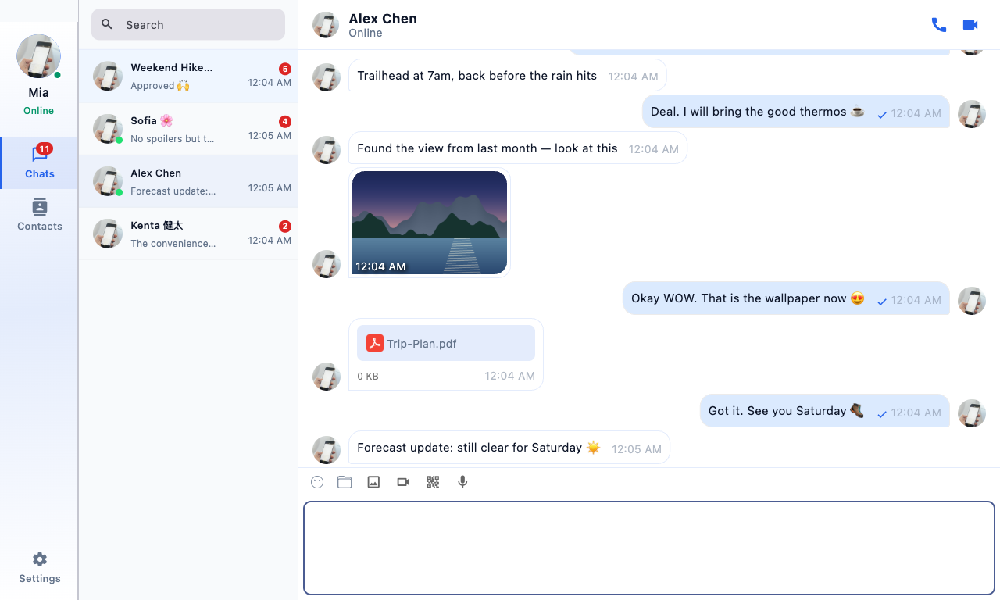
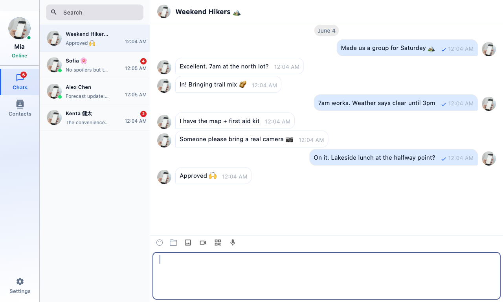
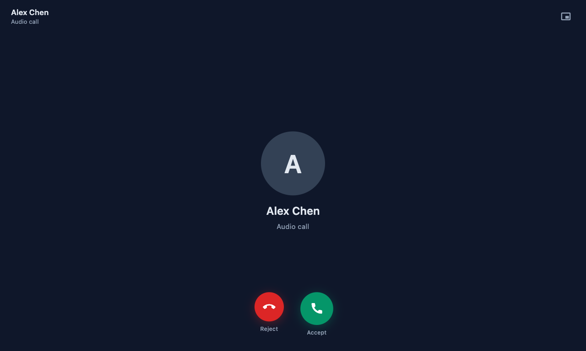
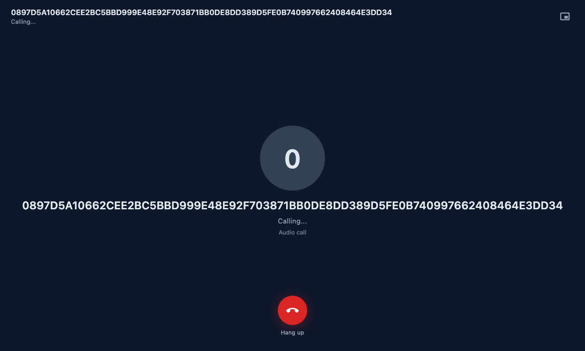
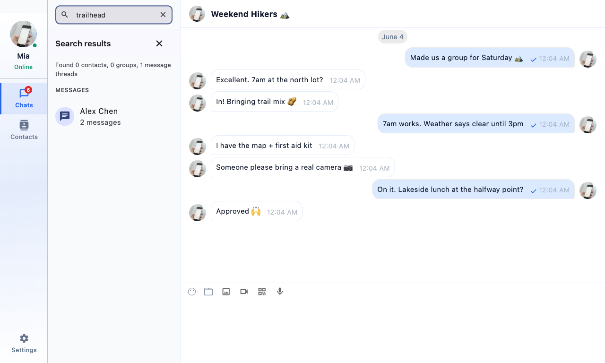
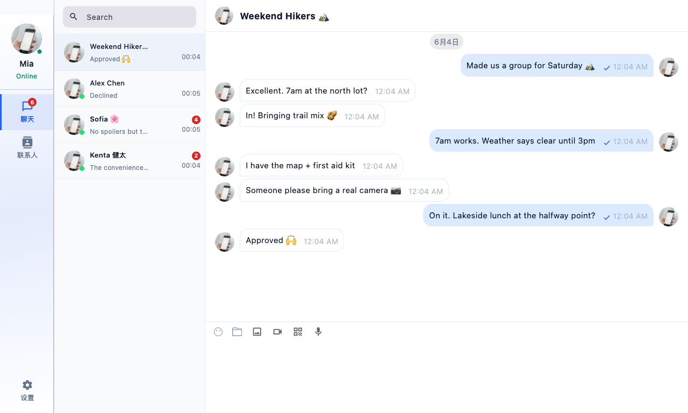
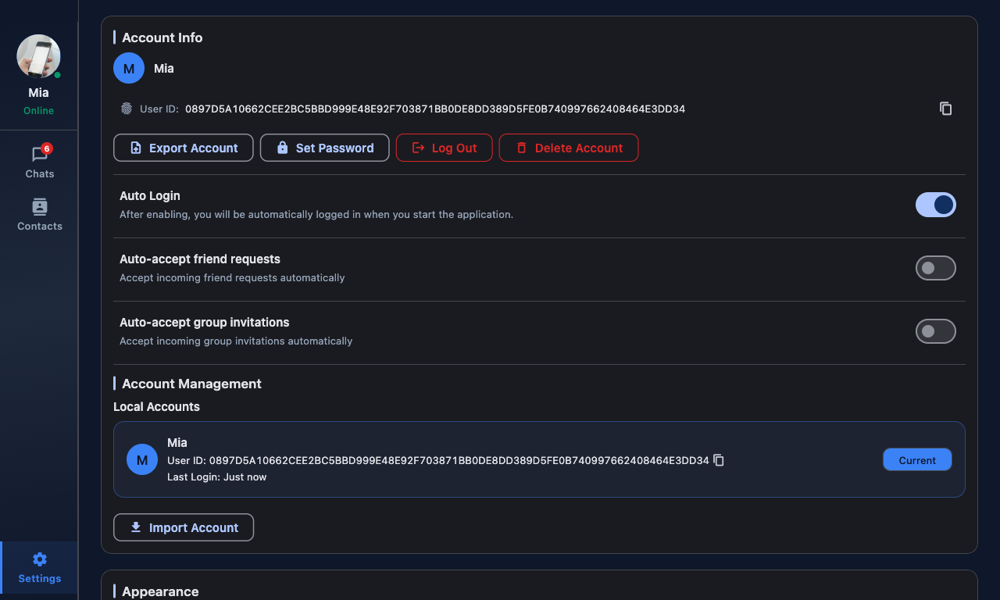

Privacy isn't a setting. It's the architecture.
Most "private" messengers still route everything through their own machines. Toxee can't read your messages, because Toxee isn't in the middle of them.
Pure peer-to-peer
Peers find each other through a distributed hash table and talk directly. No accounts, no cloud inbox, no company between you and your friends.
Encrypted end-to-end
Every message, call, and file is encrypted by toxcore's NaCl cryptography. Only the recipient's keypair can open it — by design, not by policy.
Identity without sign-up
Your Tox ID is a cryptographic key you can share as a QR card. No phone number, no email, nothing to leak — bring your identity to any device.
A serverless network deserves a first-class client.
Toxee pairs the Tox protocol with a polished, modern chat experience — these screenshots are the real app, seeded with a real weekend-hike plan.
Photos, files, replies — over the mesh.
Full-fidelity conversations without a server in sight: inline image thumbnails, file transfers with auto-accept, quoted replies, emoji, read receipts, and offline queueing.
- Drag-and-drop photo & file transfer
- Quoted replies and message search
- Delivery states & unread tracking


Group chats with no group server.
Tox NGC groups are hosted by their members — create one, share it, pin it. The conversation belongs to the people in it, literally.
- Member-hosted, invite or join by chat ID
- Pinned conversations & per-chat muting
- Roster, kick & moderation tools
Calls that dial a key, not a server.
Audio and video calls ride the same encrypted peer link as your messages — full-screen call UI, mute and camera controls, picture-in-picture.
- 1:1 encrypted audio & video (ToxAV)
- Incoming-call overlay on every screen
- Call records right in the conversation




Search everything. Speak anything.
Instant message search across every conversation, QR identity cards, desktop notifications — localized into English, 中文, 日本語, 한국어 and العربية.
- Cross-conversation message search
- QR code identity sharing
- 5 languages, RTL included
Two themes, equally at home.


Yours to build, audit, and own.
Toxee is GPL-3.0 open source, built with Flutter on top of toxcore. One repo, every platform.
# clone with submodules (tim2tox + chat-uikit) git clone --recursive https://github.com/anonymoussoft/toxee cd toxee # fetch deps, vendor the SDK, apply patches dart run tool/bootstrap_deps.dart flutter pub get # build & launch (macOS shown — see doc/ for all platforms) ./build_all.sh --platform macos --mode release